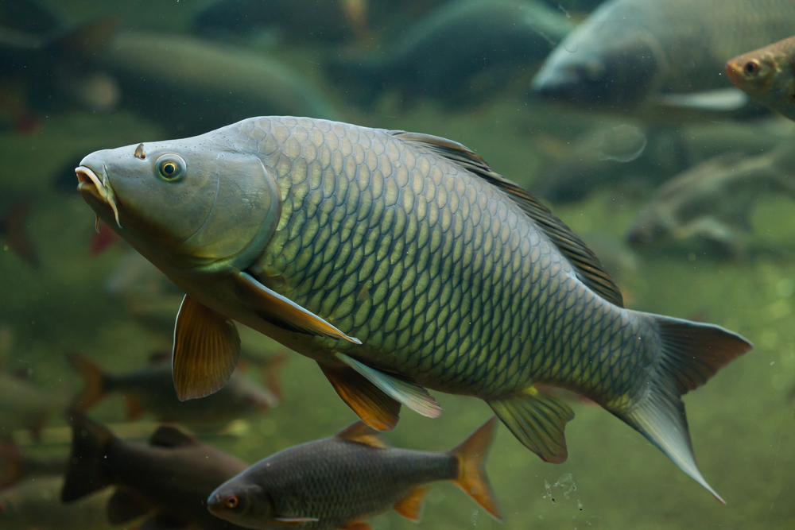

GATUNEK RYBY
Karp 🐟
Karp to jedna z najbardziej popularnych ryb słodkowodnych w Polsce. Jest rybą spokojnego żeru i często jest celem wędkarzy.
📋 Podstawowe informacje
Rozmiar
Zwykle 30–80 cm
Waga
Może ważyć kilkanaście kilogramów
Występowanie
Jeziora, stawy i zbiorniki
Trudność
Średnia
🎣 WĘDKOWANIE
Jak złowić karpia?
Karp jest często łowiony metodami gruntowymi. Początkujący mogą zacząć od prostych zestawów i popularnych przynęt.
🎣 Na co łowić?
Kukurydza, robaki, kulki proteinowe i inne przynęty karpiowe.
📍 Gdzie szukać?
W spokojnych częściach jezior, stawów i zbiorników, często w pobliżu roślinności.
🕐 Kiedy?
Karp może być aktywny przez dużą część dnia. Wiele zależy od temperatury wody i dostępności pokarmu.